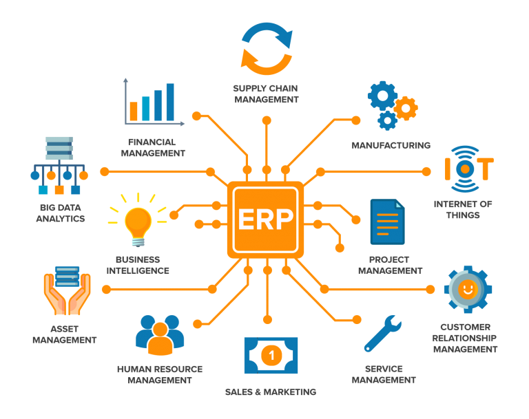
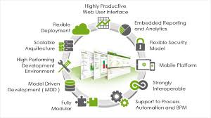
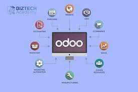

- Pengantar-Konsep dan Tahapan ERP

Enterprise Resource Planning menurut (Nofri, Rispianda, & Liansari, 2015) didefinisikan sebagai metode bagi industri dalam mencari proses bisnis yang lebih efektif dan efisien dengan berbagi informasi di dalam dan di antara proses bisnis dan menjalankan bisnis secara elektronik. Enterprise Resource Planning juga dapat didefinisikan sebagai sistem informasi yang mengintegrasikan serta mengotomatisasi proses bisnis yang terkait dengan aspek operasi, produksi, dan distribusi perusahaan. Proyek sistem informasi memiliki enam tahapan metodologi implementasi yaitu tahap perencanaan, analisis, desain, konstruksi, implementasi, dan pasca implementasi Dalam sumber lain, Enterprise Resource Planning (ERP) menurut (Purmasari, Priskila, Sasono, & Sunardi, 2018) adalah sistem untuk mengintegrasikan proses bisnis perusahaan dalam proses yang terkomputerisasi, dan merupakan sistem yang terintegrasi dengan semua proses yang ada dalam suatu perusahaan untuk meningkatkan kinerja dan meningkatkan kecepatan proses sehingga bisa meningkatkan pendapatan perusahaan.. ERP bisa mengelola proses bisnis dan sumber daya perusahaan secara keseluruhan dengan mengintegrasikan proses bisnis pada perusahaan dan merupakan konsep perencanaan dan pengelolaan sumber daya untuk mendukung berbagai fungsi dalam perusahaan, sehingga pekerjaan menjadi lebih efisien dan dapat memberikan pelayanan terbaik bagi konsumen yang dapat memberikan manfaat. maksimal bagi perusahaan. ERP juga adalah strategi yang sering dipergunakan perusahaan untuk meningkatkan kualitas sistem informasi perusahaan
Menurut (Al Aziz, Amalia, & Brata, 2018) Berikut adalah langkah-langkah Berikut ini adalah tahapan pengembangan sistem ERP :
- Tahap Perencanaan
Langkah pertama dalam implementasi adalah mengidentifikasi tujuan utama dan ruang lingkup proyek.
- Tahap Analisis
Pada fase ini, sistem ERP percontohan dikembangkan di berbagai bidang untuk kebutuhan simulasi dan menunjukkan bagaimana mengintegrasikan modul dengan pengguna dan mengidentifikasi persyaratan lainnya
- Tahap Desain
Pada tahap ini desain mulai dikembangkan. Pada fase ini, pengguna akhir harus diberikan pelatihan intensif tentang paket ERP agar pengguna dapat menggunakan sistem baru.
- Tahap Implementasi
- Tahap Dukungan Teknis
Tujuan dari fase ini adalah untuk memastikan keberhasilan sistem dalam jangka pendek dan sistem jangka panjang
- Bagaimana cara kerja ERP di perusahaan?
Ada beberapa alternatif cara untuk mengimplementasikan sistem ERP, antara lain (Utami, Susilo, & Riyadi, 2016) :
- Lakukan instalasi aplikasi ERP secara langsung dan menyeluruh. Perusahaan mengganti sistem lama dengan sistem ERP. Cara ini tentunya mengandung risiko, seperti kesiapan perusahaan dengan sistem yang baru. Apakah sumber daya di dalamnya siap buat mengoperasikan sistem ERP atau tidak. Acapkali proses implementasi akan berjalan lambat sebab prosesnya tidak dilakukan sedikit demi sedikit terlebih dahulu.
- Melakukan strategi franchise, cara ini dilakukan menggunakan beberapa sistem ERP yang berbeda pada setiap unit bisnis perusahaan. Semua sistem ini pula saling berafiliasi dengan modul umum seperti modul keuangan. Implementasi umumnya fokus pada satu unit yang dijadikan pilot project. Ini mengurangi risiko kegagalan saat menguji sistem ERP pada unit untuk melihat apakah itu bisa berjalan dengan baik. Jika hasilnya memuaskan, maka sistem ERP bisa diimplementasikan ke unit lain secara bertahap sesuai referensi pilot project.
Openbravo merupakan solusi ERP web open source berbasis web untuk perusahaan kecil dan menengah, dan dirilis di bawah Lisensi Publik Openbravo, di bawah Lisensi Publik Mozilla. Openbravo menyediakan antarmuka berbasis web, di mana pengguna bisa melihat informasi produksi, inventaris, informasi pelanggan, pelacakan pesanan, dan informasi alur kerja. Openbravo dimaksudkan untuk diinstal pada server intranet organisasi, di mana pengguna mengambil koneksi melalui browser web.
Modul-modul yang ada dalam perangkat lunak Openbravo meliputi pengaturan umum, manajemen data master, manajemen gudang, manajemen pengadaan, manajemen proyek dan layanan, manajemen produksi, manajemen penjualan, dan manajemen keuangan. Alur bisnis menggambarkan aliran informasi, konfigurasi, setup yang harus dilakukan dalam menggunakan software Openbravo (Nofri, Rispianda, & Liansari, 2015).
Aplikasi Openbravo adalah aplikasi open source berbasis web yang digunakan untuk melihat informasi proses bisnis yang meliputi alur kerja, proses produksi, inventaris, informasi pelanggan, dan pelacakan pesanan. Modul-modul yang terdapat pada aplikasi Openbravo adalah Master Data Management (Business Partner, Product, Price List, Attribute, Unit of Measure, Payment Term dan Tax Rate), Procurement Management (Requisition, Purchase Order (PO), Good Receipt, Return to Vendor , Faktur Pengiriman dan Pembelian Kembali ke Vendor), Manajemen Gudang (Bill of Material, Persediaan Fisik dan Pergerakan Baik), Manajemen Produksi (Rencana Proses, Kebutuhan Kerja dan Upaya Kerja), Perencanaan Kebutuhan Material (Manufaktur, Rencana Pembelian dan Prakiraan MRP), Manajemen Penjualan (Kuotasi Penjualan, Pesanan Penjualan, Pengiriman Barang, Pengembalian Barang dari Pelanggan, Tanda Terima Material Pengembalian dan Faktur Penjualan) dan Manajemen Keuangan (Pembayaran Masuk, Pembayaran Keluar, Proposal Pembayaran, Rekening Keuangan, Pelaksanaan Pembayaran, Pembayaran Pajak, Jurnal G/L, Kontrol Periode Buka/Tutup, Aset dan Amortisasi). Alur bisnis menggambarkan aliran informasi, konfigurasi yang harus dilakukan dalam penggunaan aplikasi Openbravo

- Odoo

Odoo adalah platform open source yang disediakan oleh TinySPRL yang memiliki berbagai modul yang saling terintegrasi, termasuk modul manajemen hubungan pelanggan, akuntansi, penjualan, dan stok (stok). Sedangkan sumber lain mendefinisikan Odoo sebagai Odoo (Open ERP) adalah aplikasi ERP (Enterprise Resources Planning) modern dan lengkap terdistribusi open source, di dalamnya terdapat berbagai program aplikasi bisnis antara lain Penjualan, CRM, Sumber Daya Manusia, Manajemen Gudang, Manufaktur, Keuangan dan Akuntansi, dan seterusnya. Odoo (OpenERP) dibangun menggunakan teknologi kerangka kerja objek terbuka yang memiliki kekuatan arsitektur, alur kerja atau Workflows MVC (Model View Controller) (Supaidi, 2017). Pertanyaan selanjutnya adalah bagaimana membuat pemodelan ERP menggunakan Odoo. Berikut langkah-langkah membuat pemodelan tersebut (Purwaningtias & Mukmim, 2019)
- Penentuan kebutuhan: proses ini mengidentifikasi kebutuhan
- Pemodelan: proses ini dilakukan dengan persyaratan pemodelan menggunakan bahasa pemodelan terpadu. Dalam melakukan pemodelan digunakan diagram perilaku dan diagram interaksi.
- Implementasi: proses ini dilakukan oleh implementasi Odoo. Dimana implementasi dilakukan sesuai dengan kebutuhan yang diidentifikasi pada langkah 1 dan pemodelan perencanaan sumber daya perusahaan pada langkah 2.
- Kelebihan dan Kekurangan Odoo
Kelebihan Oddo
- Akses informasi yang andal
- Multi-platform dapat menggunakan sistem operasi Windows, MacOS, Linux, dan Android
- Hindari redundansi entri data dan operasi
- Mengurangi jeda waktu untuk menampilkan informasi dan laporan
- Pengurangan biaya, penghematan waktu, dan peningkatan kontrol dengan analitik skala perusahaan
- Modul yang lengkap dan terintegrasi
Kekurangan Odoo
- Program aplikasi Odoo menyediakan banyak opsi konfigurasi, sehingga sulit untuk menentukan cara spesifik/terbaik
- Odoo dikembangkan oleh komunitas, jadi setiap kali program ini mengalami banyak perubahan dan peningkatan
- tinyERP / Odoo yang dikembangkan menggunakan bahasa pemrograman Python tidak memiliki komunitas yang besar, sehingga jika ada masalah sulit untuk mencari informasi.
- Kelebihan dan Kekurangan Openbravo
Dalam hal ini yang akan dibahas adalah OpenBravo 3.0. Kelebihan dan kekurangan dari versi 3.0 adalah sebagai berikut (Yulianto & Mauludin, 2017).
Kelebihan Openbravo 3.0
- Full Web Base System, sehingga OpenBravo 3.0 sangat cocok untuk perusahaan yang memiliki banyak cabang di banyak kota, karena dapat mengakses sistem database secara terpusat.
- OpenBravo 3.0 menggunakan database PostgreSQL atau Oracle yang biasa digunakan oleh departemen IT di setiap perusahaan/organisasi.
- OpenBravo 3.0 dapat berjalan di platform Sistem Operasi Linux atau Windows
- OpenBravo 3.0 memiliki fleksibilitas yang sangat tinggi dalam menyesuaikan alur aplikasi dengan proses bisnis perusahaan/organisasi.
Kekurangan Openbravo 3.0
- OpenBravo 3.0 menghilangkan modul CRM (Customer Relationship Management) yang sangat penting sebagai sarana pemeliharaan pelanggan.
- Meskipun kustomisasi/rekayasa dapat dilakukan sesuai dengan proses bisnis perusahaan/organisasi, hal tersebut dapat menyebabkan hilangnya keunggulan bersaing standar industri yang telah dijelaskan oleh OpenBravo 3.0.
- Sistem kerja pada OpenBravo 3.0 dapat dikatakan kompleks jika dibandingkan dengan kebutuhan perusahaan/organisasi.
- . OpenBravo 3.0 memerlukan proses setup, konfigurasi dan kustomisasi yang sesuai dengan kebijakan/regulasi perusahaan/organisasi agar benar-benar sesuai dengan proses bisnisnya, sehingga diperlukan bantuan dari konsultan atau end user yang telah menggunakan ERP OpenBravo 3.0.
- Kesimpulan
- Baik Odoo maupun OpenBravo memiliki kelemahan yaitu keduanya memiliki banyak kemungkinan terkait dengan aspek konfigurasi
- OpenBravo dapat menggunakan database PostgreSQL/Oracle yang umum digunakan di perusahaan-perusahaan khususnya di bidang IT dan dapat berjalan di Sistem Operasi Linux atau Windows. Namun, kekurangannya adalah belum tersedia di MacOS dan Android, sesuatu yang menjadi keunggulan Odoo.
- OpenBravo dapat digunakan untuk perusahaan yang memiliki cabang di kota lain, karena sistem database dapat diakses secara terpusat, sedangkan Odoo belum mengakomodir hal tersebut.
- OpenBravo memiliki keunggulan fleksibilitas yang sangat tinggi dalam hal alur aplikasi dalam proses bisnis perusahaan/organisasi, sedangkan Odoo memiliki modul yang lebih lengkap dan terintegrasi, sesuatu yang belum dimiliki OpenBravo.
- OpenBravo memberikan deskripsi spesifik terkait rangkaian aktivitas dan hubungan yang terkait dengan proses yang terlibat di dalamnya.
- Openbravo menyediakan antarmuka berbasis web, yang memungkinkan pengguna untuk melihat dan mengetahui hal-hal yang berkaitan dengan produksi, seperti informasi produksi, inventaris, informasi pelanggan, pelacakan pesanan, dan informasi alur kerja dalam organisasi/perusahaan.
Sumber referensi